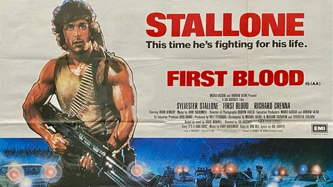

Clique aqui para voltar

John Rambo é um soldado
altamente treinado que enfrenta traumas de guerra, dificuldades para se
adaptar à vida civil,
e constantes conflitos com autoridades. Ao
longo de suas missões,
ele resgata prisioneiros de guerra, luta contra forças soviéticas no
Afeganistão,
enfrenta um regime brutal na Birmânia, e busca vingança
contra um cartel mexicano.
Suas experiências são marcadas por violência,
sobrevivência e uma luta incessante contra a injustiça,
que moldam sua identidade como um guerreiro implacável e protetor dos
oprimidos.
Veja a tabela clicando aqui para mais detalhes.
| Filme | Ano | Experiência |
|---|---|---|
| Guerra do Vietnã | N/A | Rambo sofre traumas profundos e aprimora suas habilidades de combate nas Forças Especiais. |
| Rambo: Programado para Matar | 1982 | Confronto com a polícia local, resultando em um embate violento e seu eventual colapso emocional. |
| Rambo II: A Missão | 1985 | Missão de resgate no Vietnã, onde Rambo enfrenta traição e revisita os horrores da guerra. |
| Rambo III | 1988 | Resgate do coronel Trautman no Afeganistão, unindo-se aos mujahidins contra forças soviéticas. |
| Rambo IV | 2008 | Missão de resgate na Birmânia, onde Rambo luta contra um regime militar brutal. |
| Rambo: Até o Fim | 2019 | Vingança contra um cartel mexicano após o sequestro de sua sobrinha, utilizando toda sua fúria e habilidades militares. |